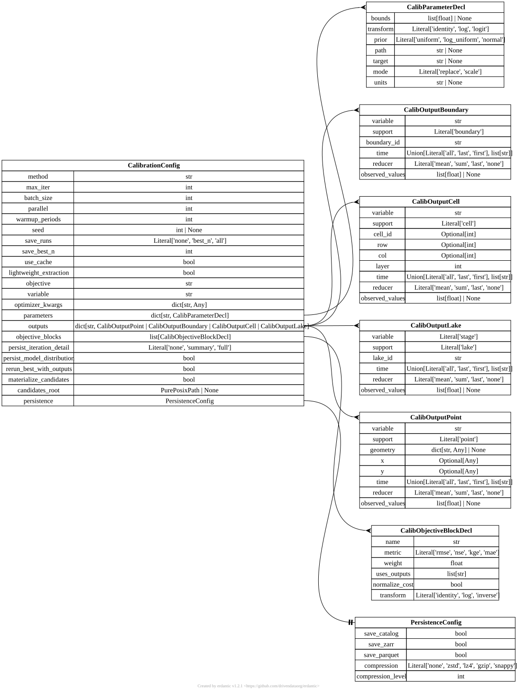

[calibration] CalibrationConfig#
TOML section: [calibration]
Pydantic model: CalibrationConfig defined in hydromodpy.calibration.config.
Top-level [calibration] section.
The config selects the optimizer, iteration budget, candidate persistence
policy, parameter declarations, observable outputs, and objective blocks.
It is the stable user-facing schema used by CLI calibration and
Project.calibrate.
When no explicit objective block is declared, HydroModPy can synthesize one
from objective and variable if the matching output exists.
Fields#
protocol
in TOML:
[calibration.protocol]
MatchingHydrographicNetworkOptions | None default = None user source
Published calibration method this file runs, named instead of retyped. A protocol writes the stages, their criteria and the model regimes they need, so the file states only what belongs to the site. Write the name alone, or a table carrying it plus the names this file uses for the parameters and outputs the method moves. Registered: ‘matching_hydrographic_network’ (Abherve et al., 2023, doi:10.5194/hess-27-3221-2023). A file that declares its own phases or objective blocks cannot also name a protocol.
method
Optional[str] default = None user source
Optimization method. Unset, it follows from what the calibration scores: ‘bisection’ when it moves one parameter in log space and every one of its blocks is signed (distance_gap), since the answer is then a zero to find; ‘scipy_nelder_mead’ otherwise, a cost to minimise. Write it to depart from that choice, and whenever method_options are given. A phase of [[calibration.phases]] names its own. Built-ins: ‘grid’ (regular sweep, sized by method_options.points_per_dim), ‘random_search’, ‘bisection’ (root of a signed criterion on one parameter, the stream-network stage), ‘optuna’ (TPE), ‘cma_es’, ‘scipy_de’, ‘scipy_nelder_mead’, ‘gp_mapping’, ‘da_mh_gp’. An unknown name is refused when the optimizer is built, with the list installed here.Optuna is installed by default; install the calibration extra for cma_es and Optuna’s cmaes sampler.
evaluator
str | None default = None user source
What turns one parameter sample into a cost. Unset runs the HydroModPy pipeline, which is what every calibrated number in this repository was produced with. A string and not an enumeration: the values that resolve depend on what is installed beside HydroModPy, which is how a surrogate or a foreign model is named without a patch. This build also ships ‘analytic_bowl’, which runs no model and scores a closed-form surface whose minimum is the midpoint of each parameter’s interval: it rehearses a whole search – space, optimizer, stopping rule, report – in milliseconds, against an answer known in advance.
forward_model
str | None default = None user source
What produces the simulated observables when the evaluator is the one that scores a model with the criteria of this file (‘scored_forward_model’). The model answers the outputs declared under [calibration.outputs] and the objective blocks weigh them, so changing a metric or a weight is a change to this document and never a patch to the model. A string and not an enumeration: what resolves depends on what is installed beside HydroModPy, through the ‘hydromodpy.calibration.forward_model’ entry-point group. Unset runs ‘linear_reservoir’, the closed-form reservoir this build ships, which is how a set of criteria is rehearsed before a model is installed. Read by no other evaluator.
max_iter
Union[int, Literal[‘auto’]] default = “auto” user source
Maximum number of evaluations of the search. ‘auto’ lets an engine that counts its evaluations before the first solve size its own budget. Only the bisection does: with d the declared interval in decades, t = log10(1 + rel_tol), S the sweep points (2 when sweep_points is 0), s = d / (S - 1) and E = bracket_expand, a root inside the bounds costs S + ceil(log2(s / t)) and one found after e expansions S + 2e + ceil(log2(1 / t)); ‘auto’ budgets the largest, 23 on [1e-7, 1e-3] m/s with seven points and one per cent (15 inside the bounds). A number below the nominal count is refused before the first solve, one below the worst case is announced, and a budget that still runs out gets exactly the halvings left, once. Any other engine gets 100 from ‘auto’ and no extension: a search that spends its budget before its own stopping rule is reported as not converged, and a re-run with a larger max_iter replays the trials already solved from the cache.
tolerance
Optional[float] default = None user source
How precisely the search has to pin a parameter before it stops, as a relative precision on the parameter itself: 0.01 asks for one per cent, 0.1 for ten. On a log-transformed parameter that is a ratio, which is how a conductivity is known in the first place, and it holds wherever the value sits; on any other transform there is no scale on the value to be relative to before the search has one, so it reads as a fraction of the declared interval. Each engine’s own stopping option is written from it, so the same number survives a change of engine, and the engine’s own option stays available for reproducing a published call verbatim. Unset, the engine’s default applies. An engine that stops on its budget rather than on a precision refuses this rather than ignore it.
parallel
int default = 1 user source
Trials solved side by side, each in its own folder, for every phase that sets none of its own. A grid or a random search evaluates its points together; a root search cuts its bracket into parallel + 1 parts; a simplex evaluates the candidates of one step together and keeps the sequential answer. Each trial holds its own model in memory; 1 solves them one after the other.
reject_water_budget_above
float | None default = None user source
Percent water-balance discrepancy past which a trial is rejected instead of scored. The solver reports the figure on every run; unset, it is recorded and nothing acts on it, so a run at twelve per cent is ranked beside one that closed even though part of the water it routed came from nowhere. There is no default because there is no universal value: a steady solve on a coarse mesh closes to a fraction of a per cent, a transient one with a lake and a routed network legitimately sits higher.
warmup_periods
int default = 0 expert source
Spin-up samples dropped from the start of every series before its metric. A count of samples, so its span follows the time step. Write scoring_window.start instead, a date that means the same span at any step and bounds a network state too. Kept so older files load unchanged. Default 0 (no exclusion).
scoring_window
in TOML:
[calibration.scoring_window]
CalibScoringWindow | None default = None user source
Dates bounding the samples every metric is computed on: the way to leave a spin-up out, with start = the first date scored. A series keeps its stamps inside the window; a network output read in one state is dated at the stamp of that state, which has to lie inside it. A phase’s own window replaces this one. Mutually exclusive with warmup_periods.
phases
in TOML:
[[calibration.phases]]
list[CalibPhaseDecl] | None default = None user source
Stages run one after the other, each calibrating its own parameters and freezing them for the next. Declaring this table is what switches the runner to staged mode; without it nothing changes for an existing configuration. The default is None and not an empty list on purpose: the resume lock hashes the configuration with exclude_none, so an absent table leaves that hash untouched and checkpoints stay resumable.
reuse_completed_phases
bool default = False user source
Read a phase’s frozen values back from a session that already completed it in the resumed chain, instead of solving the phase again. What it reuses: the physical values of the best trial that session’s own record shows for that phase’s parameters. What it risks: a session whose model, mesh or input files differed produced those values for a different problem, so a reuse is only taken when the session’s recorded params_hash can be reproduced under this run’s own cache context; a mismatch solves the phase again instead of trusting it. Off by default: re-solving is always correct, reusing without that proof is not.
save_runs
str default = “none” user source
How much to persist per iteration: - ‘none’: 1 DuckDB row per iteration, no Zarr. - ‘best_n’: same + promote top N to full simulations after the loop. - ‘all’: every iteration becomes a full simulation (Zarr included).
One of: "none" "best_n" "all"
save_best_n
int default = 10 user source
Number of top iterations to promote when save_runs=’best_n’.
lightweight_extraction
bool default = True dev source
Skip Parquet/Zarr writes for lumped models (GR4J, …) and read simulated series from the per-trial RAM cache instead. Only the promoted runs go through the catalog write path.
objective
str default = “nse” user source
Metric scoring the single simulated series, when no objective block is declared. Same vocabulary as a block’s ‘metric’; typed here so a bad value is reported against the key that was written.
One of: "rmse" "nse" "kge" "mae" "nse_log" "nse_delta" "nse_seasonal" "reservoir" "distance_gap" "distance_mean"
observed_station_id
str | None default = None user source
Observed station whose cost the optimizer minimises. Every loaded gauge is already scored at its own mesh cell, on the discharge routed to that cell, and every cost is reported; naming one says which of them drives the search. Required when several stations are loaded, optional with one.
method_options
in TOML:
[calibration.method_options.<id>]
dict[str, Any] factory user source
Options of the method, named as that method names them: points_per_dim for ‘grid’, sampler for ‘optuna’, sweep_points for ‘bisection’. They belong to one method, so a calibration that gives them writes method beside them. A key the method does not take is refused when the file loads.
parameters
in TOML:
[calibration.parameters.<id>]
dict[str, CalibParameterDecl] factory user source
Per-parameter declarations (bounds, transform, prior, path).
outputs
in TOML:
[calibration.outputs.<id>]
support = “point” | “boundary” | “cell” | “lake” | “network” factory user source
Named observables extracted from each candidate run.
Pick a tab below: setting
supportselects the matching schema.
TOML: [calibration.outputs.<id>] with support = "point" – model CalibOutputPoint.
observes
str | None default = None user source
Station whose loaded record this output is scored against. The record is aligned on the simulated timestamps, so a weighted block scores dated observations rather than a vector typed into the file. The data family follows ‘variable’: discharge from hydrometry, head from piezometry, stage from lake_levels. Mutually exclusive with ‘observed_values’. The station is located by its own record and not by coordinates written beside it, so this output and the single-metric route read the same cell and their costs are comparable; a station the project cannot locate is refused by name rather than scored on another quantity.
geometry
in TOML:
[calibration.outputs.<id>.geometry.<id>]
dict[str, Any] | None default = None user source
GeoJSON point geometry. Coordinates are in metres.
x
Optional[Any] default = None user source
X coordinate. Accepts a bare number (metres) or a pint string like ‘100 m’. Beside ‘observes’ it is not read, and loading warns so, unless snap_radius is set and the station’s record carries no coordinate.
y
Optional[Any] default = None user source
Y coordinate. Accepts a bare number (metres) or a pint string like ‘100 m’. Beside ‘observes’ it is not read, as for ‘x’.
time
Union[str, list[str]] default = “all” user source
‘all’ keeps every time step; ‘last’ / ‘first’ selects one; a list of ISO timestamps selects specific steps.
One of: "all" "last" "first"
reducer
str default = “none” user source
Aggregation over the retained time slice.
One of: "mean" "sum" "last" "none"
observed_values
list[float] | None default = None user source
Hard-coded observed values, positional and dateless. Name a station in ‘observes’ to score a record the project loaded instead.
diagonal_neighbors
bool default = False user source
Route this cell’s discharge, and the area it drains, over shared nodes rather than shared edges, which recovers a talweg that runs diagonally across a square grid. Only reaches ‘variable’ = ‘discharge’; a head or a lake state read at this point ignores it. The same routing choice as the network output’s ‘diagonal_neighbors’, declared here because a point output belongs to no network block, with its own default: false (shared edges) here, true (D8) on the network output.
snap_radius
Optional[Any] default = None user source
Opt-in. Move this gauge onto the cell that drains the most within this radius, before it is scored. Accepts a bare number (metres) or a pint string like ‘150 m’; it is a maximum displacement, measured from the gauge coordinate to the cell centres. The drained area is the one the solver routes on the mesh, with this output’s ‘diagonal_neighbors’. Only for ‘variable’ = ‘discharge’. With ‘observes’, a discharge station is then located by the coordinate of its record, which it otherwise is not, and snapped from there. Off by default: a gauge otherwise stays in the cell it resolves to, which may drain a small share of the catchment, and the run logs that share.
TOML: [calibration.outputs.<id>] with support = "boundary" – model CalibOutputBoundary.
observes
str | None default = None user source
Station whose loaded record this output is scored against. The record is aligned on the simulated timestamps, so a weighted block scores dated observations rather than a vector typed into the file. The data family follows ‘variable’: discharge from hydrometry, head from piezometry, stage from lake_levels. Mutually exclusive with ‘observed_values’. The station is located by its own record and not by coordinates written beside it, so this output and the single-metric route read the same cell and their costs are comparable; a station the project cannot locate is refused by name rather than scored on another quantity.
time
Union[str, list[str]] default = “all” user source
‘all’ keeps every time step; ‘last’ / ‘first’ selects one; a list of ISO timestamps selects specific steps.
One of: "all" "last" "first"
reducer
str default = “none” user source
Aggregation over the retained time slice.
One of: "mean" "sum" "last" "none"
observed_values
list[float] | None default = None user source
Hard-coded observed values, positional and dateless. Name a station in ‘observes’ to score a record the project loaded instead.
TOML: [calibration.outputs.<id>] with support = "cell" – model CalibOutputCell.
observes
str | None default = None user source
Station whose loaded record this output is scored against. The record is aligned on the simulated timestamps, so a weighted block scores dated observations rather than a vector typed into the file. The data family follows ‘variable’: discharge from hydrometry, head from piezometry, stage from lake_levels. Mutually exclusive with ‘observed_values’. The station is located by its own record and not by coordinates written beside it, so this output and the single-metric route read the same cell and their costs are comparable; a station the project cannot locate is refused by name rather than scored on another quantity.
time
Union[str, list[str]] default = “all” user source
‘all’ keeps every time step; ‘last’ / ‘first’ selects one; a list of ISO timestamps selects specific steps.
One of: "all" "last" "first"
reducer
str default = “none” user source
Aggregation over the retained time slice.
One of: "mean" "sum" "last" "none"
observed_values
list[float] | None default = None user source
Hard-coded observed values, positional and dateless. Name a station in ‘observes’ to score a record the project loaded instead.
diagonal_neighbors
bool default = False user source
Route this cell’s discharge, and the area it drains, over shared nodes rather than shared edges, which recovers a talweg that runs diagonally across a square grid. Only reaches ‘variable’ = ‘discharge’; a head read at this cell ignores it. The same routing choice as the network output’s ‘diagonal_neighbors’, declared here because a cell output belongs to no network block, with its own default: false (shared edges) here, true (D8) on the network output.
snap_radius
Optional[Any] default = None user source
Opt-in. Move this gauge onto the cell that drains the most within this radius, before it is scored. Accepts a bare number (metres) or a pint string like ‘150 m’; it is a maximum displacement, measured from the gauge cell centre to the cell centres. The drained area is the one the solver routes on the mesh, with this output’s ‘diagonal_neighbors’. Only for ‘variable’ = ‘discharge’. Off by default: a gauge otherwise stays in the cell it resolves to, which may drain a small share of the catchment, and the run logs that share.
TOML: [calibration.outputs.<id>] with support = "lake" – model CalibOutputLake.
observes
str | None default = None user source
Station whose loaded record this output is scored against. The record is aligned on the simulated timestamps, so a weighted block scores dated observations rather than a vector typed into the file. The data family follows ‘variable’: discharge from hydrometry, head from piezometry, stage from lake_levels. Mutually exclusive with ‘observed_values’. The station is located by its own record and not by coordinates written beside it, so this output and the single-metric route read the same cell and their costs are comparable; a station the project cannot locate is refused by name rather than scored on another quantity.
variable
str default = “stage” user source
Simulated lake quantity: ‘stage’ (water level, m), ‘volume’ (m3) or ‘surface_area’ (m2). All three are LAK observation states, read in native units and never time-scaled.
One of: "stage" "volume" "surface_area"
time
Union[str, list[str]] default = “all” user source
‘all’ keeps every time step; ‘last’ / ‘first’ selects one; a list of ISO timestamps selects specific steps.
One of: "all" "last" "first"
reducer
str default = “none” user source
Aggregation over the retained time slice.
One of: "mean" "sum" "last" "none"
observed_values
list[float] | None default = None user source
Hard-coded observed values, positional and dateless. Name a station in ‘observes’ to score a record the project loaded instead.
TOML: [calibration.outputs.<id>] with support = "network" – model CalibOutputNetwork.
variable
str default = “release_flux” user source
Per-cell observable read from the solver, in m3/s, positive when the aquifer feeds the surface.
observed_network
Optional[str] default = None user source
Where the mapped network comes from when it is not an explicit file. Exactly one of this and ‘stream_geometry_path’ must be set.
"data.hydrography"Reuses the network the hydrography data family already loaded (a local file or an osm / bdtopage / euhydro download), clipped to the delineated catchment. Costs nothing new to configure but ties the criterion to whatever that section resolved.
"geographic.river_network"Derives the network from the DEM by a drainage-area threshold. K/R shapes both where the water table reaches the surface and the accumulation the threshold is cut on, so the criterion partly fits a seepage density onto a geomorphological one; warned once and recorded on every run that uses it.
stream_geometry_path
str | None default = None user source
Vector file holding the mapped stream network, read only from here: the criterion resolves no geometry of its own and does not reuse the one the hydrography data family loaded. The way out of ‘observed_network’ when neither of its two sources is the one you want scored.
minimal_stream_geometry_path
str | None default = None user source
Vector file holding the minimal map: the permanent network, which the map named by ‘observed_network’ or ‘stream_geometry_path’ (the maximal map, every mapped reach) contains. Read as it is, never filtered by attribute. The maximal map scored is the union of the two, and the share of the minimal map outside the maximal one is published. In one state, the state is compared to this map and the maximal map is scored beside it as a validation outside the cost, as Abherve et al. (2025) do; with ‘extent’, it is the minimal bound. At most one of this and ‘minimal_observed_network’.
minimal_observed_network
Optional[Literal[‘data.hydrography’]] default = None user source
Where the minimal map comes from when it is not an explicit file. ‘data.hydrography’ reads the permanent reaches the hydrography data family wrote beside its network, which it does only when its source says which reaches flow all year. Same role as ‘minimal_stream_geometry_path’; at most one of the two.
tau_specific_ratio
float default = 0.0001 user source
A cell releasing less than this fraction of its own recharge is not a seepage face. Zero reproduces the purely geometric criterion of the paper. Frozen over the whole search: a threshold moving with the trial would cost the criterion its monotonicity.
weighting
str default = “cell” user source
Average one cell one vote (the paper) or weighted by cell area. Both values are always reported; use ‘area’ on a mesh refined along the streams, where cell density is highest exactly where distances are smallest.
One of: "cell" "area"
diagonal_neighbors
bool default = True user source
Descend over shared nodes, the eight D8 neighbours of a quad mesh. True is the paper: its distances are traced by WhiteboxTools on a D8 pointer, and the delineation that produced the catchment uses one too. False descends over shared edges only, four neighbours (D4), and departs from the paper. It is not a second-decimal choice: on a synthetic valley whose talweg runs along the grid diagonal, the most accumulated cell collects 100 per cent of the domain over shared nodes and 6.6 per cent over shared edges. On a mesh whose faces are not all quadrilaterals no cell has a diagonal and the descent walks shared edges either way; on a Voronoi mesh the two graphs are the same one.
observed_rasterization
str default = “crossing” user source
How the mapped network is drawn on the mesh cells. ‘crossing’ keeps the cell holding each point where a line crosses the segment joining two edge-sharing cell centres. On a structured grid it reproduces WhiteboxTools VectorLinesToRaster, the paper’s tool, and draws the map one cell wide like the simulated network, so a model that matches the map scores J = 0. ‘touch’ keeps every cell the line touches, corners included, and replays a session made before 2026-09; it thickens every diagonal step of the map and departs from the paper.
One of: "crossing" "touch"
observed_position_accuracy
Optional[Any] default = None user source
Positional accuracy of the mapped network. It enters the automatic validity length only: the cell size h there is max(h_obs, this), because a map is not placed better when the mesh is refined. roptim stays Doptim / h_obs, the paper’s Eq. 3. Unset is the literal reading of the paper.
validity_length
Union[Literal[‘auto’], Any] default = “auto” user source
Validity bound of Eq. 4, a length: the calibration is valid when Doptim <= this. ‘auto’ is 2 h, the paper’s two cells, where h is h_obs, the cell size on the mapped network, raised to ‘observed_position_accuracy’ when one is declared. With [geographic.snap_streams] in ‘diagnose’ or ‘apply’, it is h + max(h, F), F the floor the snap measured: one cell for the hydrogeology, one for the map error, replaced by F when F is larger. A length such as ‘150 m’ is used as it is. The bound qualifies the result and never penalises the cost.
on_roptim_violation
str default = “warn” user source
What a violation of Eq. 4 does: Doptim above ‘validity_length’, or, with [geographic.snap_streams] mode = ‘apply’, a snap that moved the map further than its displacement bound. The bound is read once, on the trial the search returns, as the paper reads it at the optimum, and on each bound in the cost of the two-bound mode; every trial still records ‘roptim’, ‘roptim_valid’ and ‘validity_length_m’. ‘warn’ logs it and returns the value, because a calibration is asked for a number. ‘error’ raises after the session is saved, so a staged calibration freezes nothing and runs no phase that depends on this one.
One of: "warn" "error"
max_unreachable_fraction
float default = 0.05 user source
Bound on ‘frac_unreachable_so’ alone: the share of the simulated network whose descent never meets the mapped one, whose target does not move between trials. Beyond a few per cent the routing surface is not conditioned and D_so would be a fiction. The reciprocal share, ‘frac_unreachable_os’, is reported and deliberately left unbounded: its target is the simulated network, which the search itself retracts.
alpha_warning_threshold
float default = 0.9 expert source
Below this value of ‘alpha_obs_closure_catchment’ the run warns that its distances carry a top-versus-map disagreement on top of the hydrogeology. alpha is the share of the downstream closure of the mapped network the network itself covers, measured on the MODEL TOP and on the catchment. It changes nothing that is computed: the criterion is scored the same way above and below it.
clipping_warning_gap
float default = 0.05 expert source
Minimum absolute gap between the whole-mesh and the catchment alpha for the clipping report to fire. A linework spilling out of the catchment over ground that routes the same way leaves the two ratios equal, and reporting it there would be noise on every ordinary project.
time
Union[str, str] default = “last” user source
Which single state the release flux is read at: ‘last’ (default), ‘first’, or an ISO date such as ‘2002-10-15’, which reads the state of the period that holds it, [start, end). That state is dated at its period’s end, which is the date a scoring_window is compared with. A steady phase runs one period over its window, so every date of that window reads its one state and one output serves both regimes. ‘all’ and a list of dates are refused: a network output reads one state.
One of: "last" "first"
extent
in TOML:
[calibration.outputs.<id>.extent]
CalibNetworkExtent | None default = None user source
The transient two-bound mode. Unset, the output reads one state, the method of the papers. Set, it reads every timestep of a transient run and scores the maximal simulated mask against the maximal map and, when ‘minimal_stream_geometry_path’ is declared, the minimal mask against the minimal map. Refused on a run with a single period or no complete calendar year.
objective_blocks
in TOML:
[[calibration.objective_blocks]]
list[CalibObjectiveBlockDecl] factory user source
Weighted blocks making up a composite objective. When empty, a single implicit block is built from ‘objective’ and ‘variable’.
persist_iteration_detail
str default = “summary” dev source
‘none’ skips component metrics; ‘summary’ keeps block totals; ‘full’ also stores per-block raw and normalized costs.
One of: "none" "summary" "full"
persist_model_distribution
bool default = False dev source
Persist the candidate distribution alongside the session.
rerun_best_with_outputs
bool default = False user source
Replay the best candidate with full outputs after the loop.
materialize_candidates
bool default = False dev source
Write a standalone override TOML for each candidate under ‘candidates_root’ so runs can be replayed later.
candidates_root
PurePosixPath | None default = None dev source
Directory for per-candidate overlay TOMLs. Required when materialize_candidates is True.
aggregate
in TOML:
[calibration.aggregate]
CalibAggregateDecl factory user source
How several scored targets become one cost: what made them comparable, how nested gauges are read, and what one unscorable member does.
uncertainty
in TOML:
[calibration.uncertainty]
CalibUncertaintyDecl factory user source
How wide the search reports its own answer to be. The calibrated value is unaffected; this only decides the interval printed beside it. It is the default of every phase, and a phase may write its own keys.
persistence
in TOML:
[calibration.persistence]
PersistenceConfig factory user source
Single switch governing every persistence sink (catalog, Zarr, Parquet, lockfile) for calibration outputs.
Starter TOML snippet#
Entity-relationship diagram#


Click to zoom and pan. Press Esc or click outside to close.